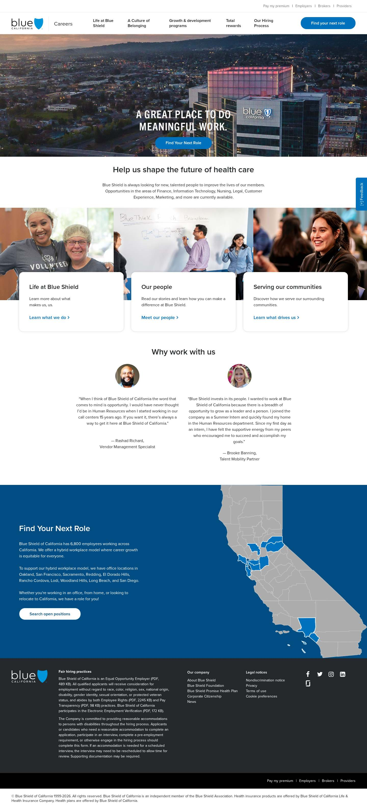
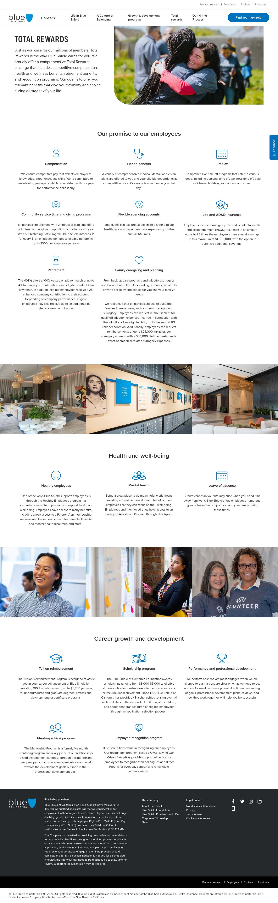
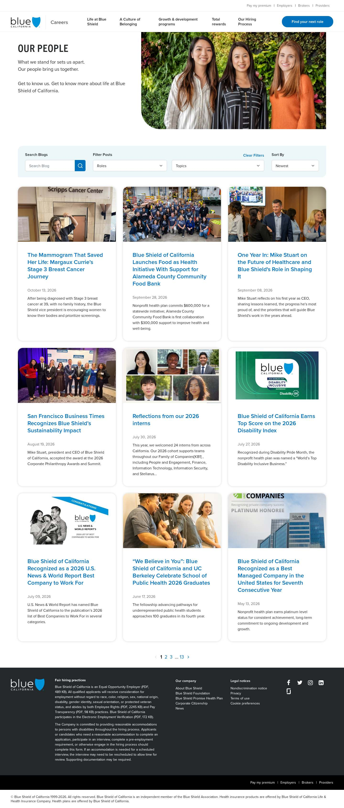
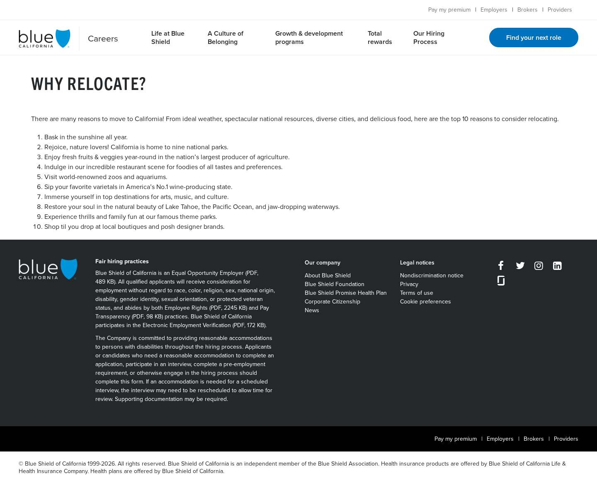
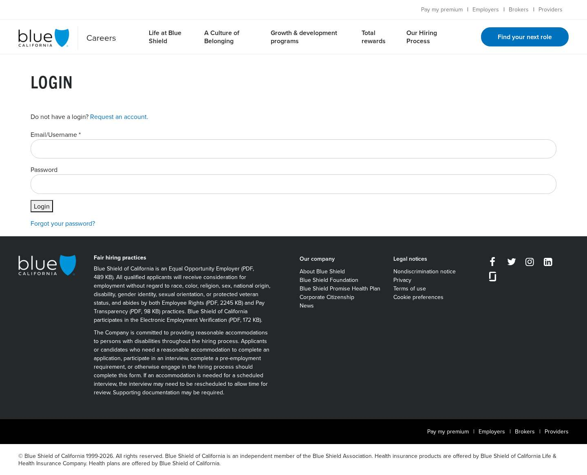
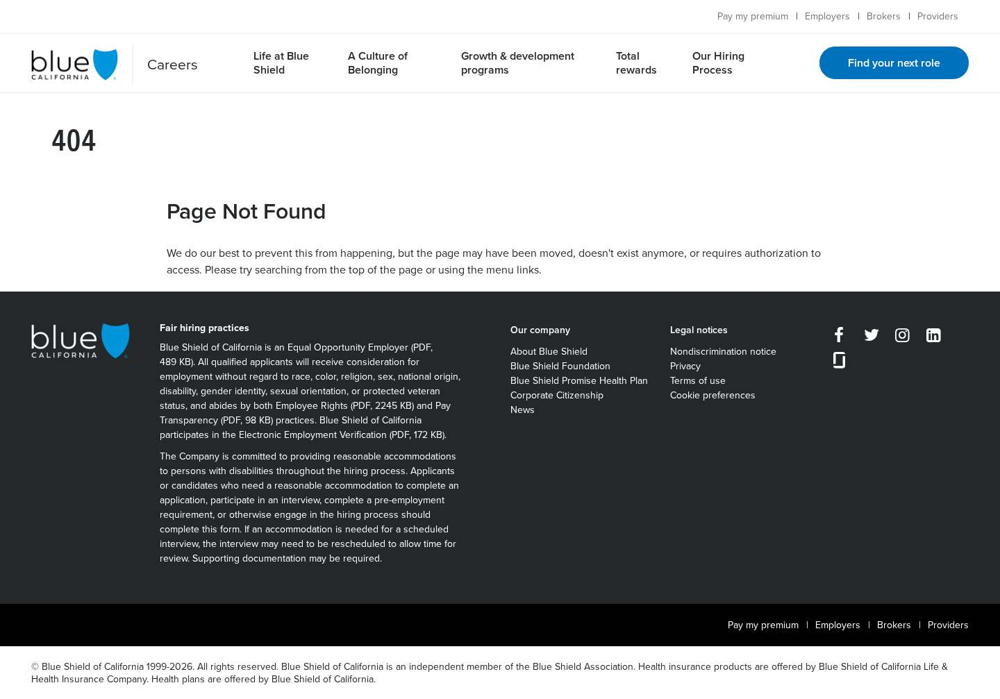
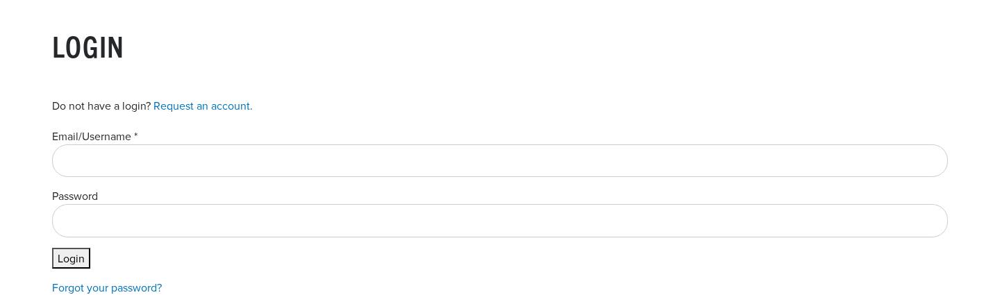
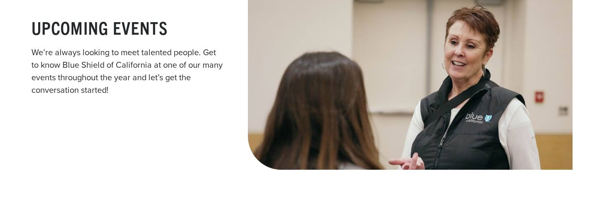

How the as-is analysis maps onto the Adobe SOW — DX for Blue Shield of California (executable 2026-09-24, V3).
Templates
| SOW template | Screenshots | Observed page types |
|---|---|---|
| Homepage |  | Careers Homepage — Careers homepage |
| Landing |  | Section Landing Page — 7 section landing pages |
| Content page |    | Story Listing & Search (Our People), Authors Listing, Text-only Content Page — Story listing/search, authors, Why Relocate |
| Blog article |  | Story Article (Our People blog post) — 22 of 77 Our People stories (SOW baseline; 55 excluded) |
| — |  | Account Form (login / registration / password) — Out of scope — SOW: account flows (login, registration, password) are handled by Oracle Recruiting Cloud |
| — |  | Retired URL (404 on live site — redirect only) — Excluded — 404 on live site; on BSC legacy exclusion list / redirect map |
Blocks
| SOW block | Type | Options | Observed components | Hours |
|---|---|---|---|---|
| Header | core | desktop nav + utility bar + dropdown, mobile off-canvas menu |  | 18 |
| Footer | core | default |  | 10 |
| Hero | core | home (image + CTA), page header with image, title only | Homepage Hero (image + headline + CTA), Page Header (title + subtitle + hero image) | 14 |
| Cards | core | related stories (auto), story grid / curated, feature links, icon tiles, logo (ERG), video tiles (opens modal), authors | Story Cards (tiles), Feature Link Tiles, Icon Tiles (benefits / hiring steps), ERG / Belonging Cards, Video Tiles with Modal Player, Authors Listing | 22 |
| Columns | core | inline text-image, alternating rows, text over image |  | 14 |
| Accordion | core | FAQ | FAQ Accordion | 6 |
| Embed (YouTube) | core | lazy YouTube facade |  | 6 |
| Modal | core | video / image dialog | Video Tiles with Modal Player, Image Gallery with Lightbox | 6 |
| Quote | core | employee quote with portrait | Employee Quote Tiles | 6 |
| Table | core | default | one story body contains a data table | 6 |
| Search (OOTB) | core | keyword search over query index | Story Listing — search, filters, sort, pagination | 10 |
| Fragment | core | nav / footer / shared content | already in the repo — configuration only | 2 |
| Article Header (auto-block) | custom | with hero image, without hero image |  | 12 |
| Social Share | custom | LinkedIn / Facebook / X |  | 6 |
| Image Gallery (lightbox) | custom | gallery + feature tiles (home), standalone 3-up | Image Gallery with Lightbox | 12 |
| Banner | custom | statement text, image + CTA, locations band (map background) | Text Banner (statement), Promo / CTA Banner | 10 |
| Story Listing (filters, sort, paging) | custom | listing, search results | Story Listing — search, filters, sort, pagination | 18 |
| Total (17 blocks, 12 core) | 178 | |||


Removed from scope
| Screenshot | Item | Basis | Hours |
|---|---|---|---|
| not a visible component | ORC featured / latest jobs widget | Removed on request (optional); SOW: no backend API integrations | 16 |
| not a visible component | ORC jobs proxy (edge worker / App Builder) | Only needed for the widget; SOW: backend API / middleware out of scope | 16 |
| not a visible component | Form submission handling (poll / alerts) | SOW: Web Forms integrations with server-side calls not included | 8 |
 | Feedback poll (block + iPR poll replacement) | SOW: Web Forms with server-side calls not included | 22 |
| no live instance | Job alerts / talent community (block + integration) | SOW: jobs funnel deep-links to Oracle Recruiting Cloud, which provides native job alerts | 18 |
 | Account forms + iPR account decommission | SOW: account flows (login, registration, password) out of scope | 18 |
| news.blueshieldca.com feed integration | SOW: integration with any external solution not listed — 39 entries migrated as static listing rows instead | 12 | |
| not a visible component | Google Analytics 4 tagging | SOW: GA4 and GTM out of scope — replaced by Adobe CJA tagging (§5) | 8 |
| not a visible component | Edge-side geolocation routing | Removed on request — listed as an SOW technical assumption, but no geolocation logic exists on careers.blueshieldca.com and CDN config is BSC-owned | 6 |
| not a visible component | Stellarus & Ascendiun cover pages + brand theming | Removed on request — SOW lists both cover pages; the repoless multi-site repo stays in §1, so re-adding them is a change request of 8 h pages + 8 h theming | 16 |
| not a visible component | Security review | SOW: security / penetration testing done by the customer | 4 |
| not a visible component | Monitoring / alerting | Not in SOW — built-in RUM only | 4 |
 | Events listing block | Page is empty today; SOW migrates content as-is | 6 |
Discrepancies
| Topic | Finding | Action |
|---|---|---|
| ATS wording | ATS confirmed as Oracle Recruiting Cloud (ecge.fa.us2.oraclecloud.com, CX_1003). The SOW text still names Workday for deep-links and account flows. | Update the SOW wording to Oracle Recruiting Cloud (no effort change); confirm the deep-link URL patterns for launch. |
| Page baseline | Estimate uses the SOW baseline of 22 blog articles. The live site has 77 stories, so 55 are excluded and redirected to the Our People listing. The SOW also lists 61 content pages, but only 4 content and 7 landing pages exist on the live site. | BSC to name the 22 stories to migrate (or the 55 to exclude) and confirm what the 61 content pages refer to; migrating more than 22 stories is a change request (≈0.25 h per extra story for import, remediation and validation). |
| Analytics | Live site uses GA4 (G-2ZH0HXENHZ). SOW uses Adobe Customer Journey Analytics page tagging. | Confirm the CJA data collection setup (Web SDK datastream, schema) exists and BSC provides credentials. |
| Source control | SOW lists GitLab as the customer source-control system, but pre-production setup and EDS/DA.live require a GitHub repo. | Confirm GitHub for the EDS code repo. |
| Wording | SOW technical assumption says “no DA.live”, while DA.live authoring is the chosen platform elsewhere in the SOW. | Correct the SOW wording. |
| Feedback poll & job-alerts script | Both exist on every live page but are out of SOW scope. | Confirm they are dropped at launch (Qualtrics accommodation link stays as a plain link). |